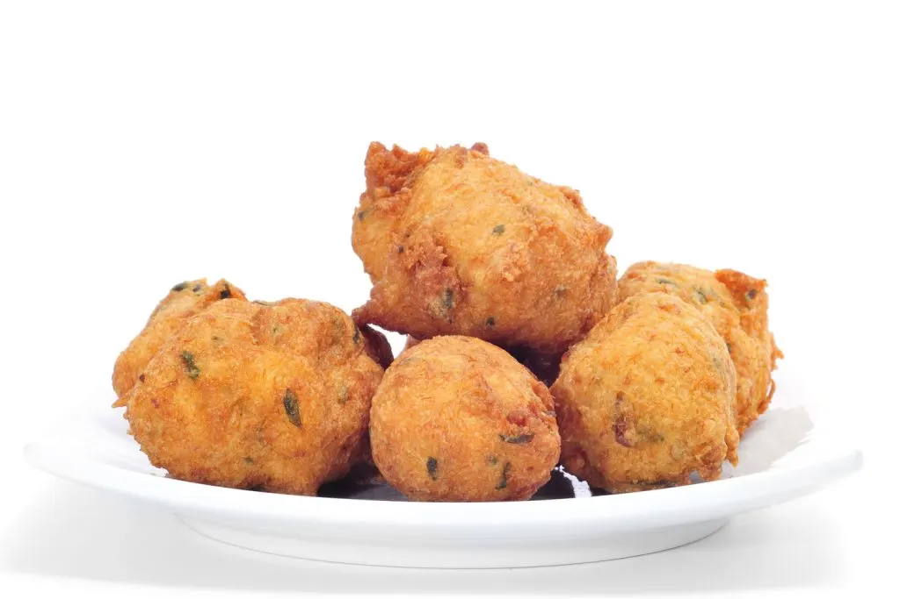
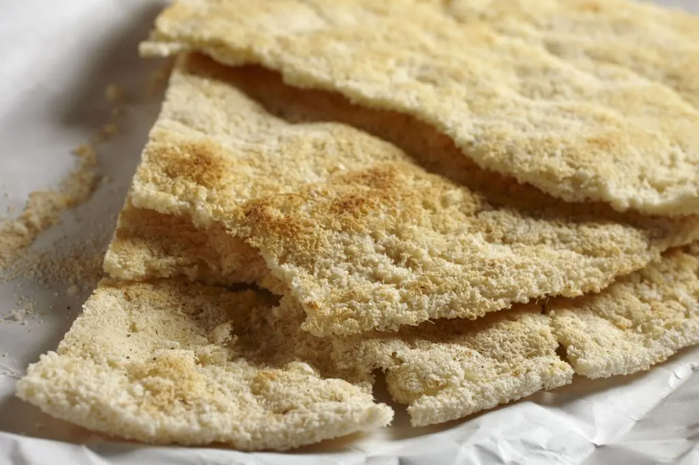

As palhinhas de queijo são feitas com queijo cheddar, farinha, manteiga, sal e uma pitada de especiarias da pimenta wiri wiri local, uma pequena pimenta vermelha exclusiva da Guiana, conhecida pelo seu picante.

Bolinhos de peixe
O prato saboroso conhecido como "bolo de peixe" é feito de filetes de peixe esmagados combinados com um ingrediente rico em amido, normalmente batatas, temperado com ervas e frito até ficar dourado.

Pão de mandioca
A receita deste pão estaladiço preparado a partir de mandioca moída foi passada de geração em geração.